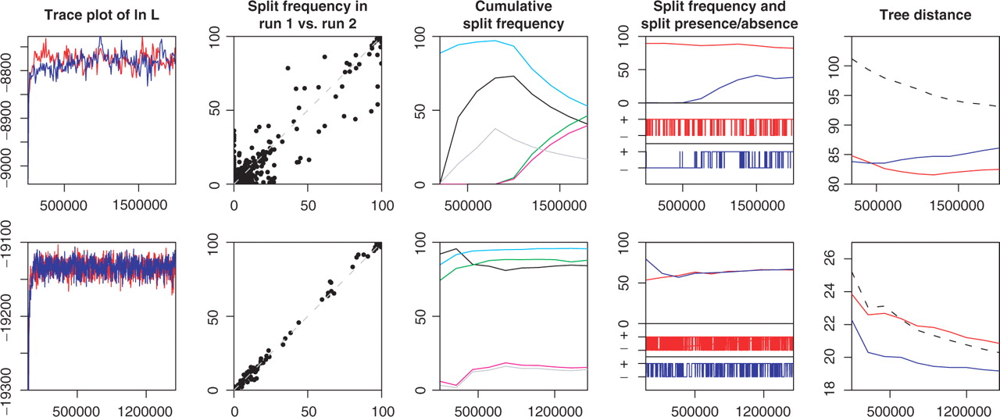
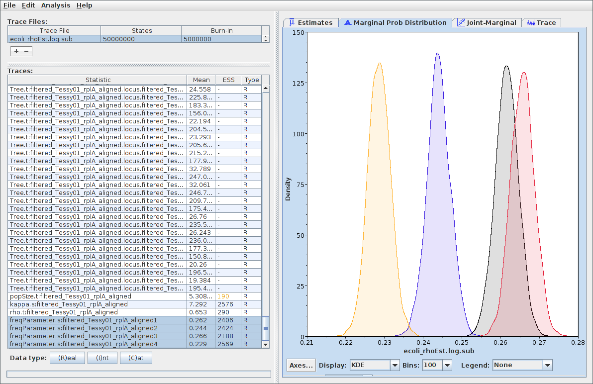

Leliaert et al., Euro. J. Phycology, 2014
MCMC in Tree Space
Need to identify a set of proposals $q_j(x'|x)$ when $x$ is a point in
the space of rooted time trees.
Stopping criteria
- How can we tell when a phylogenetic MCMC calculation has reached equilibrium?
- How do we know when we've collected enough samples?
- One approach is to compute ESS (using empirical estimates of autocorrelation time) for each
parameter and a number of tree summary statistics (e.g. tree height and tree "length").
- Assume that once all of these scores are sufficiently high
(e.g. > 200) we have adequately sampled the posterior.
- Examine output of several independent (and independently
initialized chains. A necessary (not sufficient) condition for
convergence is that sample distributions converge as the chains
converge to equilibrium.
Are we there yet?
The AWTY application applies a number of different statistics to assess
the convergence of the tree state. It relies heavily on comparing
the result of multiple runs.

Post-processing: Parameter samples
Logs of individual parameters can be considered samples from the marginal posteriors of those parameters.

Post-processing: Tree samples
- Summary statistics (e.g. age of the MRCA of a pair of taxa) can be
computed and their marginal distributions assessed.
- A number of different approaches can be used to produce a "summary" tree meant
to represent the best guess at the true tree. (None of these algorithms are perfect!!)
- Strict consensus
- Include only clades that appear in ALL sampled trees.
- Majority rule consensus
- Include clades that appear in >50% of the sampled trees.
- Maximum clade credibility tree
- The sampled topology for which the product of the posterior clade probabilities is maximized.
In BEAST, summary trees are produced using the MCC tree method via the program TreeAnnotator.
Bayesian Phylogenetic Inference Software
Popular Bayesian phyogenetic inference software:
- MrBayes (Huelsenbeck and Ronquist, Bioinformatics, 2001)
- Early CLI program for phylogenetic inference.
- RevBayes (Höhna et al., Syst. Biol., 2016)
- R-like syntax for specifying phylogenetic models.
- BEAST/BEAST2 (Drummond and Rambaut, 2007; Bouckaert et al., 2014)
- XML specification of phylogenetic models. Extensible.
Some software implementing special models:
- MIGRATE
- Performs inference under the Structured Coalescent. (I.e. subpopulation sizes, migration rates, ancestral locations.)
- ClonalFrame/ClonalOrigin
- Infer bacterial Ancestral Recombination Graphs (generalizations of trees when recombination is present).
... there are many others!
Summary
- Bayesian phylogenetic inference is generally done by adding a tree
prior to the tree likelihood. This implicitly assumes neutral
evolution.
- Tree priors link the shape of the tree to parameters such as
speciation rates, extinction rates, sampling rates, population
sizes and migration rates.
- Development of these priors is a particularly rich area of current
research.
- Due to the immense size of the state spaces involved and the use of
distributions which are analytically intractable, almost all
Bayesian phylogenetic inference uses MCMC.
- Deciding on stopping criteria is difficult. Many necessary
requirements for convergence, but no sufficient requirements!
- Methods for summarizing sampled tree distributions exist, but may
be misleading. At the moment, sticking to summary statistics for
particular characteristics of interest is the only safe
option.